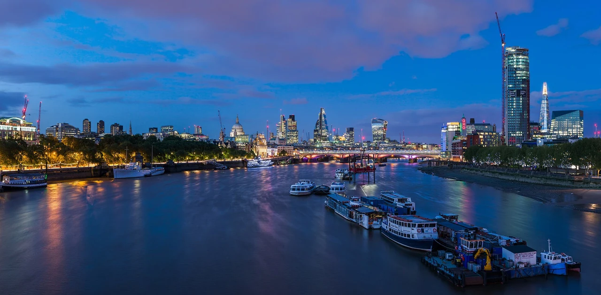
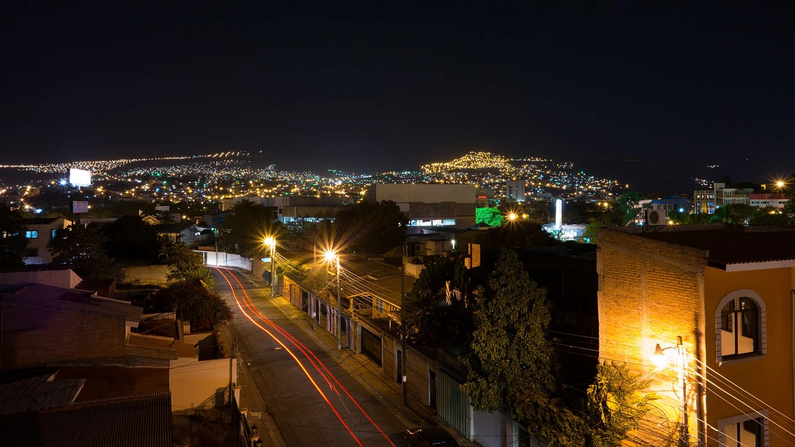

Die Stadtpanoramen stammen von Wikimedia Commons. Hier findest du für jedes Foto die Urheber, die Quelle und die konkret verwendete Lizenz. Die Bildfassungen behalten die jeweils angegebene Lizenz.
Verkleinert und in WebP konvertiert; je nach Ansicht wird ein Ausschnitt angezeigt. Keine inhaltliche Retusche. Die verwendete Bildfassung steht unter CC BY-SA 4.0.
Verkleinert und in WebP konvertiert; je nach Ansicht wird ein Ausschnitt angezeigt. Keine inhaltliche Retusche. Die verwendete Bildfassung steht unter CC BY-SA 2.0.
Verkleinert und in WebP konvertiert; je nach Ansicht wird ein Ausschnitt angezeigt. Keine inhaltliche Retusche. Die verwendete Bildfassung steht unter CC BY-SA 4.0.
Verkleinert und in WebP konvertiert; je nach Ansicht wird ein Ausschnitt angezeigt. Keine inhaltliche Retusche. Die verwendete Bildfassung steht unter CC BY 4.0.
Verkleinert und in WebP konvertiert; je nach Ansicht wird ein Ausschnitt angezeigt. Keine inhaltliche Retusche. Die verwendete Bildfassung steht unter CC BY-SA 4.0.
Verkleinert und in WebP konvertiert; je nach Ansicht wird ein Ausschnitt angezeigt. Keine inhaltliche Retusche. Die verwendete Bildfassung steht unter CC0 1.0.
Lizenzangaben geprüft am 2026-10-15.

LHR · London
London Skyline from Waterloo Bridge, London, UK - Diliff.jpg
Verkleinert und in WebP konvertiert; je nach Ansicht wird ein Ausschnitt angezeigt. Keine inhaltliche Retusche. Die verwendete Bildfassung steht unter CC BY-SA 3.0.
Verkleinert und in WebP konvertiert; je nach Ansicht wird ein Ausschnitt angezeigt. Keine inhaltliche Retusche. Die verwendete Bildfassung steht unter CC BY-SA 3.0 de.
Verkleinert und in WebP konvertiert; je nach Ansicht wird ein Ausschnitt angezeigt. Keine inhaltliche Retusche. Die verwendete Bildfassung steht unter CC BY 4.0.
Verkleinert und in WebP konvertiert; je nach Ansicht wird ein Ausschnitt angezeigt. Keine inhaltliche Retusche. Die verwendete Bildfassung steht unter CC BY 2.0.
Verkleinert und in WebP konvertiert; je nach Ansicht wird ein Ausschnitt angezeigt. Keine inhaltliche Retusche. Die verwendete Bildfassung steht unter CC BY 2.0.
Lizenzangaben geprüft am 2026-10-15.

TGU · Tegucigalpa
Tegucigalpa, Honduras Long Exposure from Humuya Inn (13440835085).jpg
Verkleinert und in WebP konvertiert; je nach Ansicht wird ein Ausschnitt angezeigt. Keine inhaltliche Retusche. Die verwendete Bildfassung steht unter CC BY 2.0.
Verkleinert und in WebP konvertiert; je nach Ansicht wird ein Ausschnitt angezeigt. Keine inhaltliche Retusche. Die verwendete Bildfassung steht unter CC0 1.0.